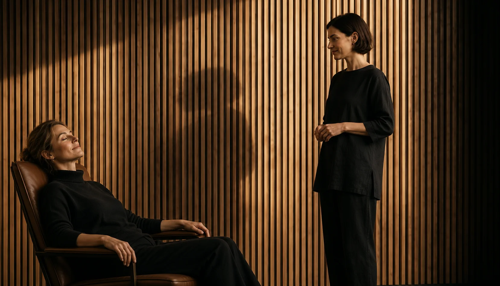

00–05 MINUTES
01 / The Downshift
Settle into your chair, put the outside world on pause and ease into the session with warmth, sound and guided breathing.

EVERY WEDNESDAY MORNING • 30-MINUTE SESSIONS IN SYDNEY CBD
A quieter mind. Clearer focus. A moment that's entirely yours, before the demands of the day. Experience 30 minutes of coach-led breathing, focus and sensory recovery in a dedicated acoustic sanctuary.
Book my complimentary session9 Dec preview or a complimentary January session · Sydney CBD
Come in your work clothes. No sweat, no experience needed.
SOUND FAMILIAR?
A dedicated space to step away from the noise, practise mental fitness and reset before your working day.
Nothing to organise. Nothing to prove. We'll guide you through the rest.
The experience
Not another app. Not another task on your to-do list. A structured in-person, boutique experience designed to help you practise switching between focus and recovery.
Settle into your chair, put the outside world on pause and ease into the session with warmth, sound and guided breathing.
Follow coach-led breathing and attention intervals, supported by rhythmic sound. Practise redirecting your focus and shifting into recovery.

Gentle guided recovery and a gradual return to the outside world, ready to transition into your working day.

DESIGNED AROUND YOUR LIFE
Work clothes, comfortable chairs, no changing or showering.
This isn't group therapy. You don't need to explain how you're feeling.
No need to know how to meditate or be good at switching off.
In and out in 30 minutes. A short walk from Wynyard and Circular Quay.
THE SCIENCE BEHIND THE FIRST 30
Just as physical fitness involves practising movement, strength and recovery, mental fitness involves practising how we direct our attention and respond to the demands around us.
01 / REGULATION
Research into controlled breathing suggests that deliberate breathing patterns can influence autonomic nervous system activity and support relaxation and stress management.
02 / ATTENTION
Attention is not simply something we have or lack. Research into attention and mindfulness-based training explores how repeatedly noticing distraction and redirecting focus can support aspects of cognitive performance.
03 / RECOVERY
Research into music, sound and stress recovery informs our use of rhythmic audio and a carefully considered acoustic environment to support the experience of focus and relaxation.
Rather than asking you to simply switch off, we guide you through a structured practice of attention, regulation and recovery.
THE PRACTICE
Our progressive quarterly programme introduces a different training focus each month, helping you develop practical skills for managing the demands of everyday life.
Illustrative image indicating the three blocks of mental training in each session.
6–27 January
Practise paced breathing and deliberate recovery.
3–24 February
Practise noticing distraction and redirecting attention.
3–24 March
Explore rhythmic sound and guided listening.

The space itself
Step away from the city and into a dedicated timber-lined acoustic studio, designed to minimise outside noise and support focused attention and relaxation.
Immersive sound. Thoughtful lighting. Comfortable seating. A space where, for thirty minutes, there is nowhere else you need to be.

YOUR INVITATION
Join our complimentary December preview and experience the full session before our January launch.
FOUNDING PREVIEW
Wednesday 9 December 2026
7:45–8:15 am
180 George Street, Sydney CBD
Regular Wednesday sessions begin 6 January 2027. Your first session is complimentary if you can’t make the December preview.
Can't make 9 December?
Claim a complimentary January session.BEFORE YOU ARRIVE
Think interval training for your mind. The First 30 combines guided breathing, focused attention and immersive sound to help you practise shifting between focus and recovery.
Not at all. Every part of the session is coach-led. You don't need to know how to meditate, control your thoughts or be good at switching off. Busy minds are welcome.
Come in your usual work clothes. There is no strenuous physical activity, no sweat and no need to change or shower afterwards.
Women navigating demanding careers, family responsibilities, midlife, changing hormones and the mental load of everyday life. You don't need to be experiencing menopause to attend.
No. This is mental fitness, not group therapy. There is no pressure to talk about your feelings or share personal experiences.
Yes. Our founding preview is entirely complimentary. You'll experience the full 30-minute session with no payment required and no obligation to continue.
Regular Wednesday morning sessions begin on 6 January 2027. There is no obligation to book further sessions.
THE FIRST 30
9 December or a session in January · Sydney CBD
Book my complimentary sessionGive yourself the first 30 minutes.